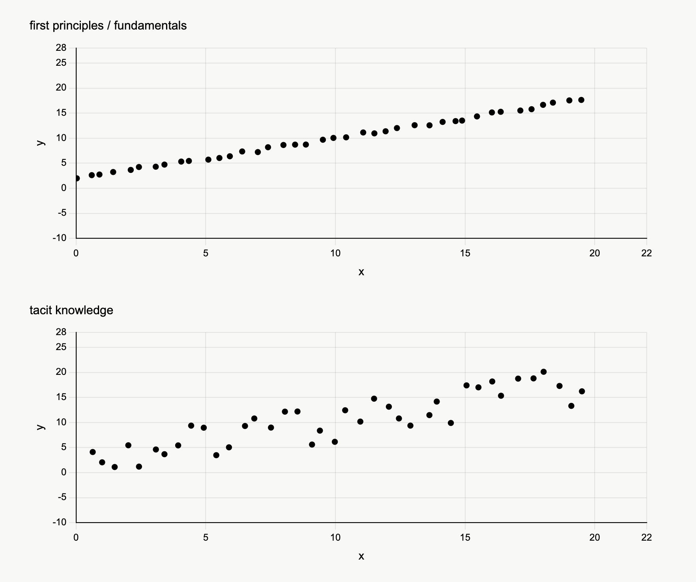
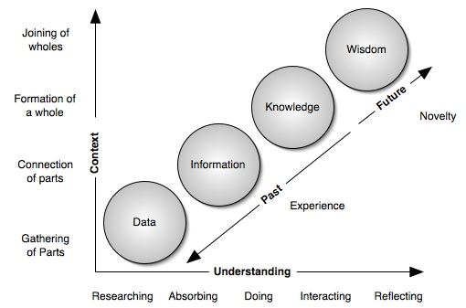
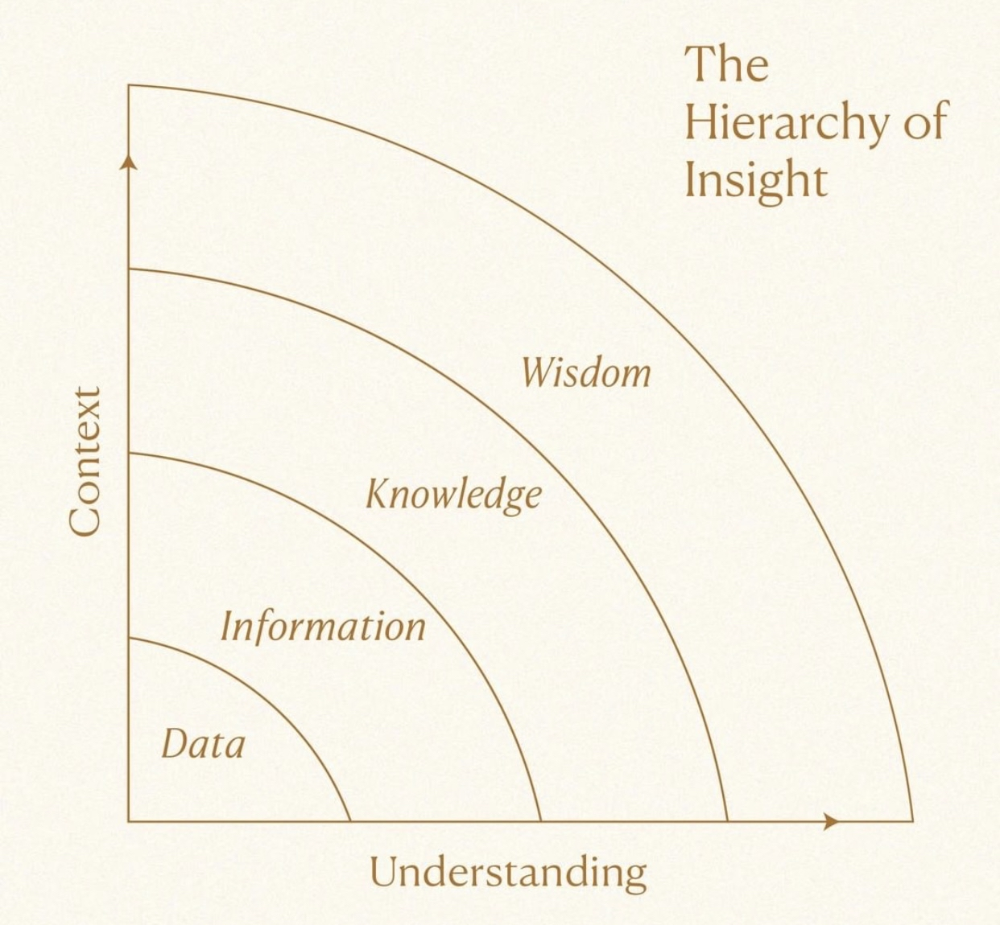
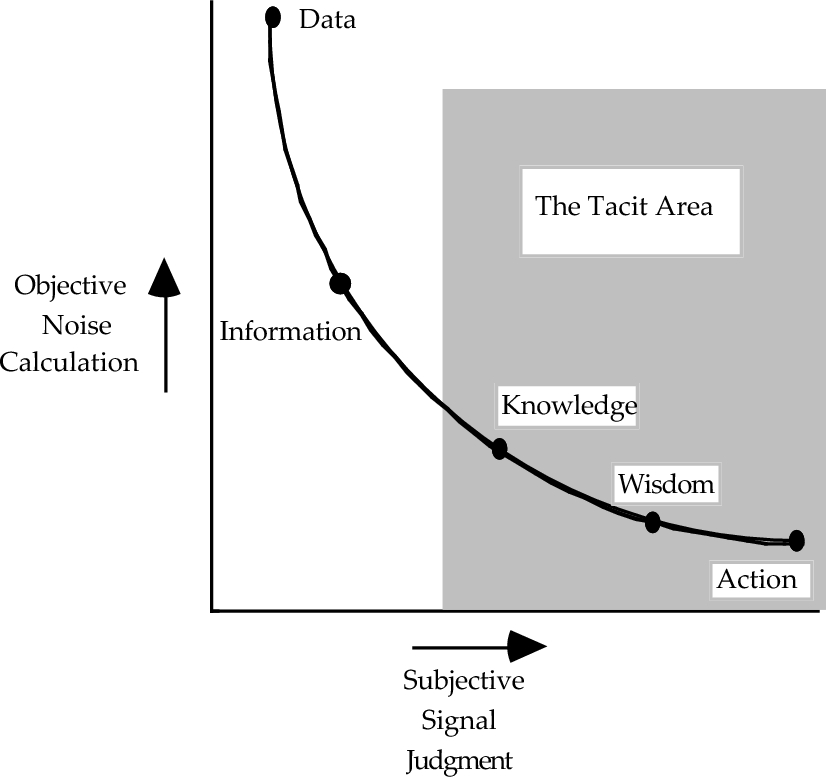

Atlas.
Every claim in the thesis stands on someone else's prior work. This page is the atlas of those sources: the cognitive science, the regulatory references, the market-evidence citations, and the further reading that grounds the argument. The thesis cites them by number; this is the canonical key. Forthcoming images of the methodology in operation will sit alongside the text as the deployments mature.
References.
The fourteen primary references that appear in the long-form thesis, in order of first citation.
- Global Mobilities Project, Human Movement Since the Industrial Revolution: A Quantitative History, working dataset (Oxford School of Geography and the Environment, 2024 update). The 4,000% figure references aggregate person-kilometres of human travel across all modes, indexed against an 1800 baseline. See also International Transport Forum, Transport Outlook 2023, OECD Publishing.
- Polanyi, M. (1966). The Tacit Dimension. University of Chicago Press. The foundational text for the category. The formulation "we can know more than we can tell" appears on page 4 of the 2009 reissue.
- Dreyfus, H. L., & Dreyfus, S. E. (1986). Mind Over Machine: The Power of Human Intuition and Expertise in the Era of the Computer. Free Press. See also Dreyfus, S. E. (2004). "The Five-Stage Model of Adult Skill Acquisition." Bulletin of Science, Technology & Society, 24(3), 177–181.
- Klein, G. (1998). Sources of Power: How People Make Decisions. MIT Press. The originating text for Recognition-Primed Decision (RPD) theory, building on field studies conducted across the previous fifteen years.
- Zsambok, C. E., & Klein, G. (eds.) (1997). Naturalistic Decision Making. Lawrence Erlbaum Associates. The first synthesis volume for the NDM field; subsequent volumes have been published roughly each decade since.
- Parr, T., Pezzulo, G., & Friston, K. J. (2022). Active Inference: The Free Energy Principle in Mind, Brain, and Behavior. MIT Press. The cited account of expert decision-making as a precision-weighted online inference process is developed across the chapters on perception, action, and habit formation.
- Pew Research Center, ongoing analysis based on US Census Bureau data. UK figures from the Office for National Statistics retirement and labour-force survey, 2024 release.
- Jacobson Group & Aon, U.S. Insurance Labor Market Study (2025 edition). Deloitte, Insurance Industry Outlook: Talent and Workforce (2025). The 60% replacement-rate figure is from the Jacobson Group survey, cross-referenced against Bureau of Labor Statistics insurance occupational projections.
- Goldman Sachs Research, Global AI Capex Forecast (2024). IDC, Worldwide AI Spending Guide (2025). The aggregate figure references cumulative capital expenditure across all AI infrastructure categories through 2030.
- BCG, Build for the Future: 2024–2025 AI Adoption Survey. McKinsey & Company, The State of AI (running annual report, 2025 edition).
- Massachusetts Institute of Technology, The GenAI Divide: State of AI in Business 2024, MIT NANDA Initiative (research preprint, 2024). Headline finding: 95% of enterprise generative AI pilots produced no measurable return on investment.
- Gartner, Predicts 2025: AI Deployment and Adoption Challenges. Gartner press release, "Gartner Predicts 30% of Generative AI Projects Will Be Abandoned After Proof of Concept by End of 2025" (July 2024, updated 2025).
- Klarna, public statements and earnings commentary (2024–2025) regarding the rollback of customer-service AI automation and the return to human-agent hiring. See coverage in Bloomberg and the Financial Times, May 2025.
- European Union, Regulation (EU) 2024/1689 of the European Parliament and of the Council laying down harmonised rules on artificial intelligence (Artificial Intelligence Act). Bank of England Prudential Regulation Authority, Supervisory Statement SS1/23. National Association of Insurance Commissioners, Model Bulletin: Use of Artificial Intelligence Systems by Insurers (adopted December 2023). Federal Reserve / OCC, SR 11-7 / OCC Bulletin 2011-12.
Further reading.
Adjacent works that do not appear as numbered citations but inform the position the thesis takes.
- Ericsson, K. A., Krampe, R. T., & Tesch-Römer, C. (1993). "The Role of Deliberate Practice in the Acquisition of Expert Performance." Psychological Review, 100(3), 363–406.
- Weick, K. E. (1995). Sensemaking in Organizations. SAGE Publications.
- Tetlock, P. E. (2005). Expert Political Judgment: How Good Is It? How Can We Know? Princeton University Press.
- Collins, H. (2010). Tacit and Explicit Knowledge. University of Chicago Press.
- Nonaka, I., & Takeuchi, H. (1995). The Knowledge-Creating Company. Oxford University Press.
Visual atlas.
Four figures that ground the position. The first shows what tacit knowledge looks like as data versus what first-principles knowledge looks like — the same underlying trend, but the runtime layer cannot be cleanly fit. The second places "the tacit area" on the classic noise-vs-judgment curve. The third and fourth are renderings of the data → information → knowledge → wisdom progression that recurs across the cognitive-science and organisational-knowledge traditions.



